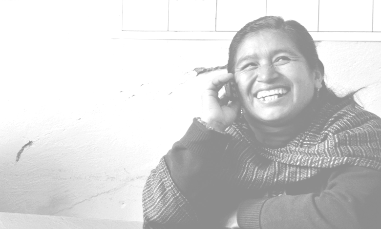

About Rhizomatica
Through efforts around the world, we use innovative applications of technology to facilitate community organization and personal and collective autonomy.
Our History
Rhizomatica began in 2009 as a quest to make alternative telecommunication infrastructures possible for people around the world facing oppressive regimes, the threat of natural disaster, or the reality of living in a place deemed too poor or isolated to connect.
Over the years, we have worked with communities in Africa, Asia and Latin America to build autonomous cellular networks, develop innovative digital HF radio technology for safe and reliable long-distance communication without the Internet, and deploy alternative energy infrastructure and bio-economy projects.
Our mission
Our mission is to support communities to build and maintain self-governed and owned communication and energy infrastructure.
Our approach
We develop open-source technology that helps people and communities build their own communication networks and alternative energy sources. We advocate, agitate and organize for enabling policy and regulatory environments for our community projects. And we create organizing, sustainability, knowledge creation and capacity-building strategies so that they can thrive while respecting local cultures and norms.